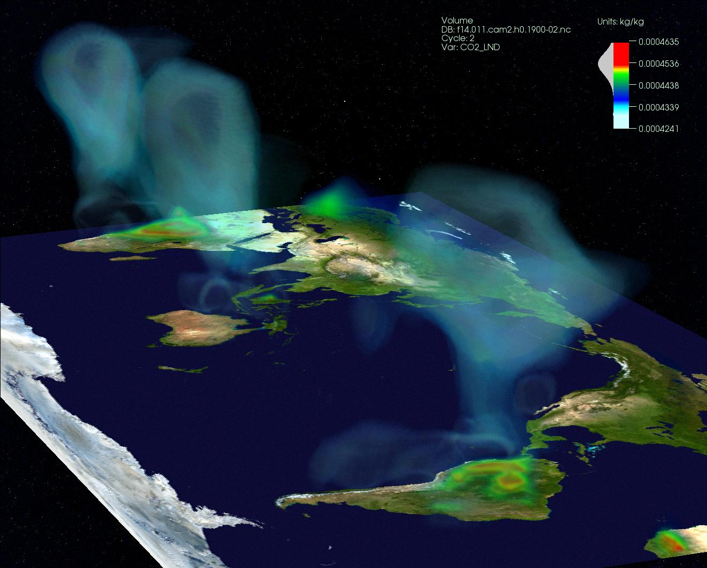

数据可视化调研报告*
Data visualization
* by YeQing
科学可视化
Scientific visualization
科学可视化侧重于利用计算机图形学来创建视觉图像，从而帮助人们理解那些采取错综复杂而又往往规模庞大的数字呈现形式的科学概念或结果。
科学可视化方面主题：
* 计算机动画 - 计算机动画是利用计算机创建动态图像的艺术、方法、技术和科学
* 计算机模拟 - 指计算机程序或计算机网络试图对于特定系统模型的模拟
* 信息可视化 - 信息可视化集中关注的是创建以直观的方式传达抽象信息的手段和方法
* 界面技术与感知 - 揭示新的界面以及对于基本感知（perception）问题的深入理解，将会如何为科学可视化领域创造新的机遇。
* 表面与立体渲染 - 渲染是指利用计算机程序，依据模型生成图像的过程
* 立体可视化 - 研究的是一套旨在实现在无须数学上表达另一面（背面）的情况下查看对象的技术方法
科学可视化方面应用：
* 自然科学 - 恒星的形成，引力波，大型恒星的超新星爆炸，三维分子结构的渲染等
* 地理学与生态学 － 地形地貌的渲染，龙卷风的分布，气候的可视化等
* 形式科学 － 表面形貌，曲线图，图像标注，散点图等
* 应用科学 － 保时捷911模型，YF-17 飞机制图，城市的渲染，城市轨道交通图等
科学可视化方面应用：
* 头部MRI的矢状位切面动画
 * 对玻璃表面进行的表面形貌扫描
* 对玻璃表面进行的表面形貌扫描
 * 气候的可视化
信息可视化
Information visualization
与科学可视化相比，信息可视化则侧重于抽象数据集，如非结构化文本或者高维空间当中的点（这些点并不具有固有的二维或三维几何结构）。
同时，目前在信息界所面临的最大挑战是信息爆炸，即所谓的 “大数据”（Big Data）。如前所述，信息可视化是建立在数据基础上的。要想从海量数据中获取有用的知识，信息可视化还必须借助于近10年取得长足进步的机器学习和数据挖掘（包括文本挖掘和图挖掘） 的方法，以及自然语言处理技术。
信息可视化国内外研究状况
Research status of Information visualization
在世界主流人机交互会议CHI上，2011年收录了14篇信息可视化论文，2012年收录了8篇。这说明信息可视化与人机交互是密切相关的。这些收录的论文大致概括了如下内容：
• 交互/界面: 用新颖的交互技术来进行可视化数据的操作,
• 用户行为: 通过用户实验来探索可视分析中用户的行为, 从而指导可视化系统的实现,
• 行业可视化: 将信息可视化技术应用在特定领域, 如汽车、帐单、文献、医院、病例、土地凭证、大屏幕等,
• 社交网络: 把信息可视化技术和机器学习有机地结合起来, 将网络上的大量数据以用户可理解的方式呈现出来.
IEEE Information Visualization 2014：
1. Ordinal & Categorical Data
2. Perception & Cognition
3. Defining the Design Space
4. Storytelling & Presentation
5. Systems & Sets
6. Application Areas
7. Time, Trees & Graphs
8. High-Dimensional Data
IEEE Pacific Visualization 2014：
1. Patterns and Glyphs
2. Flow Visualization
3. Multidimensional Data
4. Graphs/Networks
5. Visual Knowledge Discovery
6. Tensor Visualization
7. Geographic/Geospatial Visualization
8. Data Manipulation and Exploration
国内研究状况
近几年来, 我国高校和研究院所在可视化的研究方面取得了令人瞩目的进步. 包括浙江大学、北京大学、清华大学、中科院软件所、中科院计算所、中科院超算中心、北京应用物理与计算数学研究所、天津大学、山东大学等单位都开展了卓有成效的可视化研究。主要成就有以下一些方面。
• 北京大学提出了一种体可视化系统, 它支持 “所见即所得体可视化 (WYSIWYG: What you see is what you get, volume visualization)” 的新颖可视化交互手段
• 香港科技大学和微软亚洲研究院提出了TextFlow，一个可视化和文本挖掘技术的无缝集成。通过交互、主题挖掘模型和可视化提取3层特征，如主题演化趋势、关键事件和关键词的关系，帮助用户精炼分析结果和不断地洞察数据。
• ...
发展方向建议
Suggestion
我的 报告 结束了， 谢 谢 *
;)